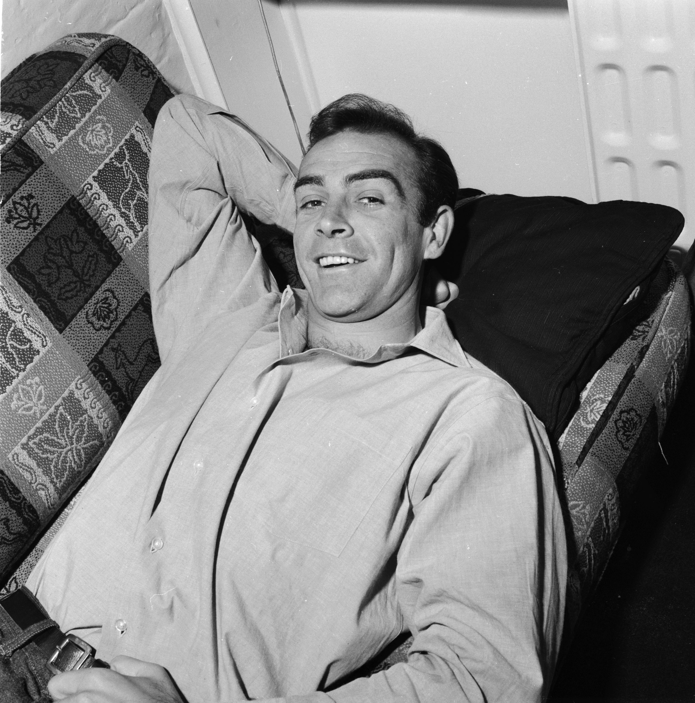

Best known as the first actor to portray fictional British secret agent 007, James Bond, in the hugely successful movie franchise. Starring in seven films between 1962 and 1983.
August 25, 1930 - October 31, 2020
Sir Sean Connery has died at the age of 90. He was the first actor to play James Bond on the big screen in Dr. No in 1962, From Russia With Love, Goldfinger, Thunderball, You Only Live Twice and Diamonds Are Forever followed. pic.twitter.com/VaFPHCM5Ou
— James Bond (@007) October 31, 2020
How infinitely sad to hear the news Sir Sean Connery has passed away. He and Roger were friends for many decades and Roger always maintained Sean was the best ever James Bond. RIP
— Sir Roger Moore (Legacy) (@sirrogermoore) October 31, 2020
Sean Connery was a legend, one of the greatest actors of all time. He provided endless entertainment for all of us & inspiration for me. I’m not just saying that because he was a bodybuilder who placed in the Mr. Universe contest! He was an icon. My thoughts are with his family.
— Arnold (@Schwarzenegger) October 31, 2020
When you’re a poor kid from a lower middle-class family in New York, and you are going to meet your very first bona fide movie star, and he turns out to be bigger and better then anything you could’ve dreamed…
— Ron Perlman (@perlmutations) October 31, 2020
I love you Sean. Rest well.. pic.twitter.com/H5TYmkliMC
Simply the best.#RIPSeanConnery pic.twitter.com/8eBm1aZi78
— Mark Hamill (@HamillHimself) October 31, 2020
Sean Connery A Great Star, Brilliant Actor and a wonderful friend. The Man Who Would Be King was THE KING
— Michael Caine (@themichaelcaine) October 31, 2020